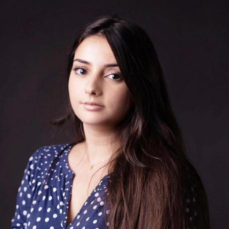

Marie Rivalin
Développeuse web et mobile (React & Vue.js)
Suite à une formation intensive, je me lance dans le développement web avec l'ambition de décrocher une alternance en 2025. Animée par la volonté de progresser, je mets à profit une expérience riche en gestion de projets et en création de contenu, acquise notamment dans le journalisme, un domaine où rigueur et créativité sont essentielles.


↓